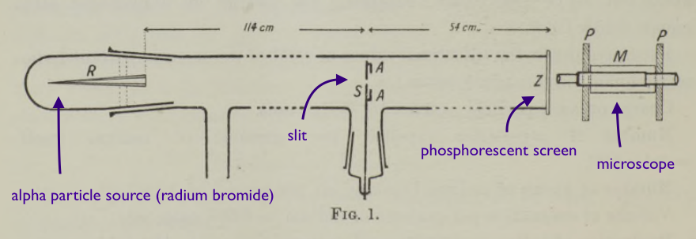

Prior to Rutherford and Geiger's experiment, the atom was thought of as a "raisin-bun". People knew that there were negatively charged electrons, somewhere around the outside, and that there was a positive charge to balance the negative charge, but that was about it. In a paper in 1904 (On the Structure of Atoms), JJ Thompson described the atom as "a ring of n negatively electrified particles placed inside a uniformly electrified sphere."
It was known that there were negative particles within the atom.Rutherford and Geiger knew that negative $\beta$-particles scattered when passing through matter; but what about positive $\alpha$-particles? And if so, what does that say about the structure of the atom?
If $\alpha$-particles were to scatter when passing through matter, this would mean that they would have to come into contact with a dense, positively charged "corpuscule." At the time, J.J. Thomson's model of the atom predicted that the positive charge was not condensed to one place, but rather spread out over the entire atom. Scattering would refute this theory.
This would support J.J. Thomson's hypothesis about the positive charges in an atom not being condensed into one region.
The premise of this experiment was to shoot a beam of positively-charged particles through different materials (solid and gas), and see if the beam scattered at all.
Firstly, they needed a source of $\alpha$-particles.
Certain large atoms spontaneously produce $\alpha$-particles in $\alpha$-decay. They consist of 2 protons + 2 neutrons; a Helium nucleus. Of course, at the time, Rutherford and Geiger didn't know they were a Helium nucleus.Once they had a source of $\alpha$-particles, they needed to select which materials to have the beam pass through. They chose:
They needed to have a control material for the experiment, one where the $\alpha$-particles wouldn't pass through any atoms, i.e. vacuum.